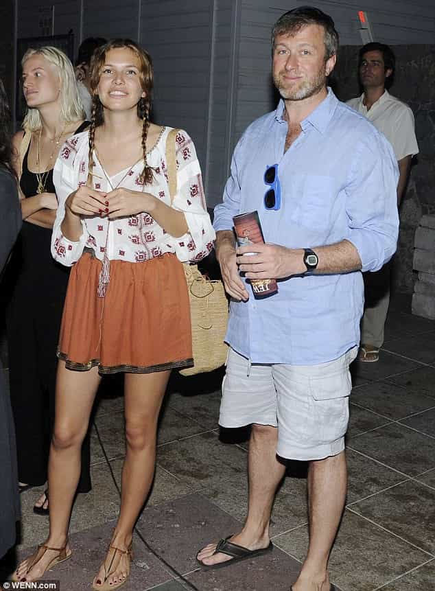
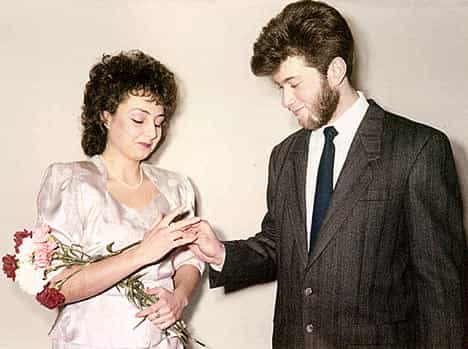

Samseau is a player philosopher psychologist who enjoys a good discussion. You can follow him on Twitter.


You may have heard about the all-powerful oligarchs that formed in the wake of the USSR’s destruction, but have you ever wondered what kind of man makes it to the top in such adverse circumstances?
Please introduce yourself to multi-billionare Roman Abramovich (and his current wife, Dasha Zhukova, 15 years his junior), one of the richest men in the world.

This man started his empire by smuggling contraband during the collapse of the Soviet Union. No one really knows how he got his goods or where he met his contacts (although he did have a brief stint in the Soviet Army), but it is known where he got his start, from his first wife Olga.

Olga’s parents gave Roman a 2,000 rouble wedding gift, which he soon multiplied while smuggling black market goods such as deodorant, perfume, tights, and toothpaste.
But as Roman’s success increased so did his desires. Olga already had children, having been knocked up by some traveling actor, but Roman wanted his own. He unloaded Olga in less than three years after marrying her, and left her with a bit of cash and a shitty apartment she continues to live in to this day.
Olga reported that Roman did not come home until very late towards the end of her marriage, and she never found out where he was or who he was with, but she does know that Roman had already impregnated his next wife, Irina, before he had divorced his first wife.

It was during his second marriage that Roman made his true fortune, when he met Boris Berezovsky, a Russian oil tycoon, who introduced Roman to Boris Yeltsin, then president of Russia. During this marriage he ended up having five children in total, had an incredible falling out with Berezovsky, and moved to London with all the other Russian oligarchs because foreign earned income is not taxed in Britian. His divorce to Irina cost him $300 million, only a fraction of his multi-billions.
What can we learn from this man?
First, notice the political and social climate Russia had during Roman’s ascent to power. The USSR during the 80’s was in it’s dying breaths, facing bankruptcy, and Roman took advantage of an otherwise terrible economic situation by capitalizing on the weak Russian government’s ability to track his illegal contraband.
By exploiting and profiting from the weak system, Roman continued to take big risks with the law, and was heavily rewarded for doing so. Does this seem applicable to present day America?
This brings us to second observation of Roman’s life, regarding his view on women. He matured during his first marriage, and swallowed the red pill once his wealth started to attract many more women. Realizing that women were expandable objects with little value other than the feelings they bring to the man, he got rid of his first wife before it became cost prohibitive.
Most likely Roman has gone through stages of being faithful and scandalous to his wives, but of course they never left him due to his incredible secrecy with his affairs and his enormous passive value. Once his second wife no longer gave him the satisfaction he wanted as a man, he replaced Irina with his current wife Dasha.
When we judging this man, and asking ourselves “What kind of man rises to the top in Russia,” perhaps one of the most cutthroat countries on the planet, we can see that the kind of man who rises to the top is the one unconcerned with questions of morality, legality, or love, and far more interested in questions of practicality, pleasure, and being useful to others. Balls, cunning, and game took Roman to the top.
But before this transformation occurred, he was once just another young buck chasing tail…
Read More: Sex, Drugs, and Libel In The New Russia
{kind=link}